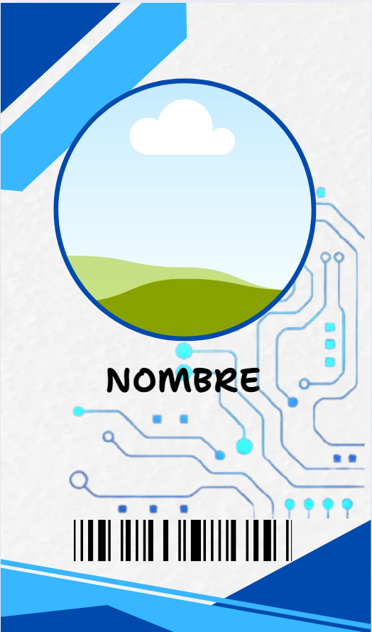
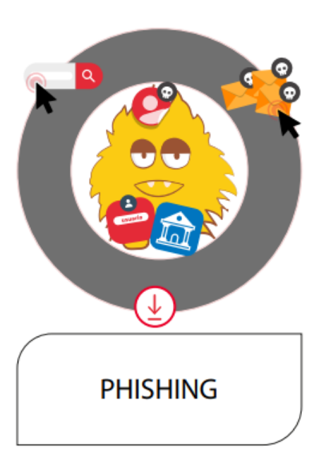
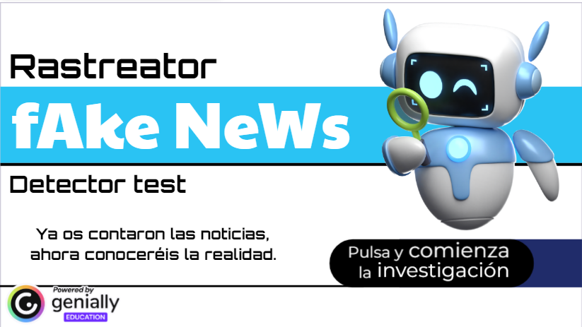

¿Quiénes somos?
CODI es una iniciativa promovida en Cantabria por la Dirección General de Dependencia, Atención Sociosanitaria y Soledad no Deseada, financiada por la UE a través de los fondos NextGeneration.
Buscamos reducir la brecha digital y fomentar las competencias digitales en menores de 9 a 17 años, divididos en tres tramos: 9-11, 12-13 y 14-17 años.
Hemos diseñado actividades adaptadas a cada nivel, con metodologías motivadoras como gamificación, aprendizaje basado en problemas o escape rooms.
Líneas de acción
- Línea 1.1 (9-11 años): Alfabetización digital, interfaces y sistemas operativos.
- Línea 1.2 (12-13 años): Continuación del uso básico, introducción a la seguridad en red.
- Línea 2 (14-17 años): Seguridad y respeto en redes sociales.
Actividades
PASAPORTE CODI
Identidad digital, creación de personaje, edición de imágenes, Canva, códigos QR y envío de emails.
QUIÉN ES QUIÉN – Ciberataques
Trabajamos los diferentes tipos de ciberataques, desde el spam hasta el phising, por dónde pueden entrar y qué consecuencias puede tener cada uno.
RUEDA DE ENCRIPTADO
Una serie de mensajes encriptados con cifrados como el César o el numérico, les harán reflexionar sobre la importancia de tener contraseñas seguras en nuestras cuentas, lo que son y cómo crearlas, mientras averiguan el mensaje secreto

BÚSQUEDA DEL TESORO
Instrucciones de un capitán pirata les irá guiando a través del ordenador y hará trabajar habilidades básicas como copiar y pegar carpetas, buscar y descargar imágenes en Google, o extraer archivos ZIP.
(imagen)
RASTREATOR
Ponemos a prueba su intuición para identificar noticias falsas presentándoles una serie de titulares de noticias, unos ciertos y otros no. Trabajando temas como no creernos todo lo que vemos por internet, repasaremos una serie de marcadores que pueden ayudarles a identificar las fake news.
